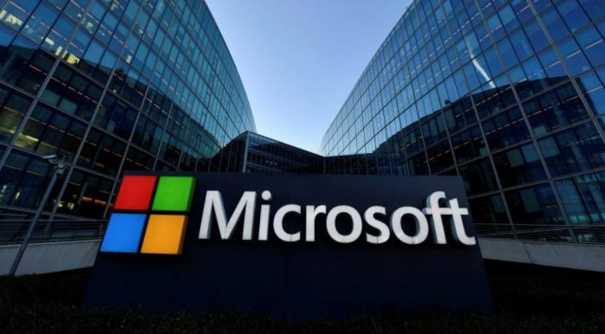

 Ма́йкрософт[5] (Microsoft Corporation, Microsoft) — одна из крупнейших транснациональных компаний по производству проприетарного программного обеспечения для различного рода вычислительной техники — персональных компьютеров, игровых приставок, КПК, мобильных телефонов и прочего. Разработчик наиболее широко распространённой на данный момент в мире программной платформы[6] — семейства операционных систем Windows. Подразделения компании производят семейство игровых консолей Xbox, а также аксессуары для персональных компьютеров (клавиатуры, мыши и т. д.[7]). C 2012 года производит собственный планшетный компьютер — Surface. Продукция Microsoft продаётся более чем в 80 странах мира, программы переведены более чем на 45 языков. Штаб-квартира компании находится в городе Редмонд, штат Вашингтон, США. Штат сотрудников корпорации на 30 июня 2021 года составляет 181000 человек[8]. В 2018 году заняла второе место в списке 500 лучших работодателей мира по мнению журнала Forbes[9].
Компания начинает свою историю с 1975 года, когда друзья-студенты Гарварда Билл Гейтс и Пол Аллен, прочитав опубликованную 1 января 1975 года в журнале «Popular Electronics» статью о новом персональном компьютере Altair 8800, разработали для него интерпретатор языка Basic. Через месяц, 1 февраля, было подписано лицензионное соглашение с компанией Micro Instrumentation and Telemetry Systems (англ.) (MITS), производителем этого ПК, об использовании Basic в составе ПО для Altair. Свою компанию они думали назвать «Аллен и Гейтс», но посчитали, что это больше подходит для юридической конторы, и тогда Пол предложил — «Micro-Soft», от «microcomputer» и «software»[18]. Свой первый год новая компания, в которой работало три человека, закончила с оборотом $16 005. (для сравнения: в 2000 году выручка корпорации составила $25,3 млрд, а прибыль — более $7,3 млрд). В начале 1980-х годов пути двух основателей компании разошлись: по воспоминаниям Аллена, в то время как он не хотел посвящать всю свою жизнь Microsoft, Гейтс был полностью сконцентрирован на работе и развитии компании[19]. По настоянию Гейтса, партнёры неоднократно пересматривали свои доли в бизнесе, причём Аллен уступал в пользу Гейтса. Аллен писал в своей книге[19]: Мой партнёр хотел заграбастать как можно больше и уже ничего не выпускал из рук. С этим я примириться не мог… Тогда я подумал, что в какой-то момент должен буду уйти. В 1981 году компания выпускает MS-DOS, которая являлась переименованной версией 86-DOS, написанной Тимом Патерсоном из Seattle Computer Products. Разработка 86-DOS заняла всего шесть недель и представляла собой клон CP/M от Digital Research, портированный для использования на процессоре 8086 и содержащий всего два отличия от оригинала: улучшенную логику буферизации дисковых секторов и новую файловую систему FAT12. Первая версия 86-DOS вышла в августе 1980 года. Согласно подписанному в ноябре 1980 года договору с IBM, Microsoft требовалось предоставить операционную систему для нового компьютера IBM PC, основанного на процессоре Intel 8086. Для этого Microsoft в мае 1981 года наняла Тима Патерсона для завершения адаптации 86-DOS к прототипу IBM PC, а затем в июле того же года полностью выкупила права на 86-DOS 1.10 за $75 тыс. Microsoft сохранила нумерацию версий, но переименовала ОС в MS-DOS. В августе 1981 года лицензированная корпорацией IBM MS-DOS 1.10/1.14 под наименованием PC DOS 1.0 начала поставляться с новыми персональными компьютерами, IBM PC.
Microsoft часто характеризуют тем, что её бизнес-культура построена вокруг разработчиков. Огромное количество денег и времени каждый год тратится на рекрутинг молодых разработчиков ПО, обученных в университетах, и содержание их в компании. Стремясь заинтересовать и привлечь лучших, Microsoft начинает с работы с учениками старших классов школы. В частности, чтобы привлечь больше женщин в отрасль, компания регулярно проводит дни DigiGirlz и летние лагеря для старшеклассниц. Чтобы отобрать нужных людей и дать им возможность лучше узнать будущего работодателя в Microsoft используют ряд специальных приемов. Так, кандидаты, попадая в головной офис компании, оказываются в специальной зоне, которая называется «Почувствуй Microsoft» (англ. Experience Microsoft). В этой зоне можно познакомиться с технологическими новинками Microsoft и демонстрируются ролики, в которых сотрудники рассказывают о своем опыте. В фойе специально для кандидатов установлены игровые приставки Xbox и планшеты Microsoft Surface со специальными приложениями[50]. Также ключевые решения на всех уровнях принимают разработчики или бывшие разработчики.